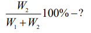
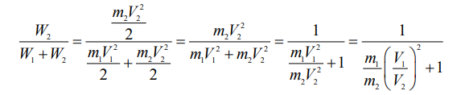
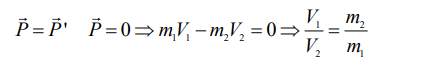
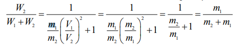
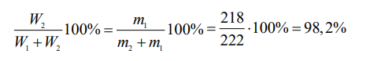

Berilgan:
m1 = 218 m. a. b. - Poloniy yadrosining massasi
m2 = 4 m. a. b. - Alfa zarracha massasi
V1 - Poloniy yadrosining tezligi
V2 - Alfa zarracha tezligi
Topish kerak:

Formula:

Bizda tezliklar va ularning nisbati nomalum, shu sababli tezliklar nisbatini impulsning saqlanish qonunidan foydalanib topamiz.
 va olingan natijani yuqoridagi formulaga olib borib qoyamiz.

Yechish:

Javob:
98.2% foiz energiyani alfa zarracha o'zi bilan olib ketadi.